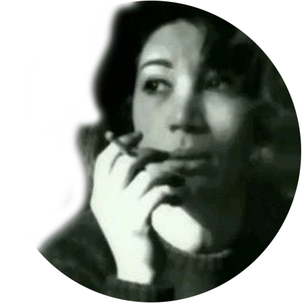

Stage 4
Stage 4
Born on December 28th, 1934, in Tehran, Iran, into a family of seven children,
Forough Farrokhzad received an early
exposure to classical Persian literature raising in a household that valued poetry and culture.
Her father, Mohammad Baqer Farrokhzad, was a military officer holding the rank of colonel.
Despite societal norms restricting women's
education, she pursued her studies passionately,
completing high school and attending the Girls' School of Kamal al-Molk
for Fine Arts.
At sixteen, she fell in love and married her maternal cousin Parviz Shapour, despite
her family's
opposition.
Their short marriage ended in divorce in 1955 due to her desire for independence.
The separation deeply
affected her , leading to limited visitation rights with her son Kamyar.

According to her sister Puran, she became interested in literature at the age of 11. She was writing
poems in the form
of Qazals (kinde of ode) by the age of 15, which were never published. Later, Forough referred to
this period as the
time when she had a "Qazal complex". Her poetry then evolved to incorporate modernist and
confessional elements. In
1952, at the age of eighteen, she published her groundbreaking collection "Asir" (The Captive),
marking her debut as a
poet.
Forough's intensely personal verses reflected the challenges and desires of a woman in a
conservative
society. She
experienced the constraints imposed on women in Iranian society, leading her to challenge
traditional norms and pursue
her literary ambitions fervently. She grappled with societal expectations regarding women's roles
and education, yet
remained determined to pursue her passion for literature. Despite facing obstacles, Forough
exhibited resilience and
independence, refusing to conform to societal conventions. Her mindset reflected a desire for
personal and artistic
freedom, which she sought to express through her poetry.

After her divorce and separation from her son, Forough devoted herself to poetry, grappling with
feelings of guilt and
regret. She also experienced a short relationship, she later dismissed it as a foolish affair,
expressing remorse for
her actions. The poem "Sin," inspired by this experience, became a controversial work in Iranian
literature. Under
immense pressure from society and her family, Forough attempted suicide but survived, enduring
prolonged hospitalization
for severe psychological strain. Seeking solace .and inspiration, she embarked on a transformative
journey to Europe for
nine months, immersing herself in its cultural richness.
Divar (The Wall), released in mid-1956 was dedicated to her ex-partner as a tribute to their deep
love and valuable shared history
Esyan (Rebellion), published in 1958 after her return from Europe explored themes of determinism,
evil, and the divine,
.showcasing her evolving poetic style and philosophical depth.
This period was marked as the beginning of Forough's journey towards self-discovery and empowerment,
laying the
foundation for her future contributions to Persian literature.
She had developed a close affinity
with the thoughts of
Khayyam, discusses ideas of determinism, Evil, God, and similar topics in her book Rebellion written
during this stage
of her life.
Her journey to Europe provided a transformative escape, instilling in her a newfound
sense of calm, hope,
and empowerment.

Her professional journey led her to employment at the Golestan Film Organization in the summer of
1958, where she met
renowned Iranian writer and filmmaker Ebrahim Golestan, who left a profound impact on Forough's
professional life,
personal, and mindset.
Very soon, 24-year-old Forough and 36-year-old Golestan sparked fell in a
romantic involvement.
In 1964, Forugh traveled to Germany, Italy, and France to expand her professional career.
During her
short stay in
Europe, she learned Italian and German too. After her return, Forough's house in Tehran became a
gathering place for
many Iranian prominent figures such as renowned poets, writers, and artists. Shockingly, In a cold
Tuesday of winter
1967 (February 14th), Forough passed away by a car crash in her way toward her work.
- Editing the documentary "A Fire" which won the Golden Mercury Award for Best Documentary at the
Venice Film
Festival in 1961
- Acting and assistng director in the short film "Khastegari" (The Proposal), commissioned by the
National Film Board
of Canada in 1961.
- "The House Is Black" (documentary, 1962)
- Best Documentary award at the Oberhausen Film Festival for "The House Is Black" (1962)
- ""Another Birth"" (her revolutionary poetry book published in 1964)
- Participation in the second Authors Cinema Festival in Pesaro (1965)
- UNESCO half-hour film about Forough's life (1965)
- Fifteen-minute film by Bernardo Bertolucci about Forough's life (1965)
- Playing roles, edditing and assisting directors in some short films and plays.

During her third stage of life, Forough Farrokhzad experienced a profound shift in her demeanor and
outlook, influenced
by her travels in Europe and her collaboration with Ebrahim Golestan in the film industry.
She
embraced newfound
perspectives on identity and autonomy, leading to intellectual and literary transformations.
This
period marked a
significant evolution in her mindset, as she navigated complexities and sought self-expression
amidst societal
pressures. Her briliant collection "Another Birth" immediately shone brightly in the literary scene
of Iran, and
modernist critics regarded it as a turning point in the history of modern Persian poetry.
Forough Farrokhzad's poetry challenged societal norms and addressed taboo subjects
such as female sexuality, desire, and societal constraints on women.
Throughout her life and work, Forough explored her identity as a woman,
a poet, and an individual in the context of her culture and time.
Her journey of self-discovery is intricately woven into her poetry, making her a symbol of feminist
empowerment in Iran.
In addition to her poetry, Forough ventured into filmmaking,
producing documentaries that addressed social issues, such as the lives of lepers and street children.
Her film ""The
House is Black"" (1962) is considered a masterpiece of Iranian cinema. Although Forough Farrokhzad's
untimely
death in a
car accident in 1967 cut short a brilliant career, her legacy endures.
Her poetry continues to inspire generations of
poets, feminists, and artists in Iran and around the world.
She remains a symbol of courage, artistic innovation, and
the power of words.